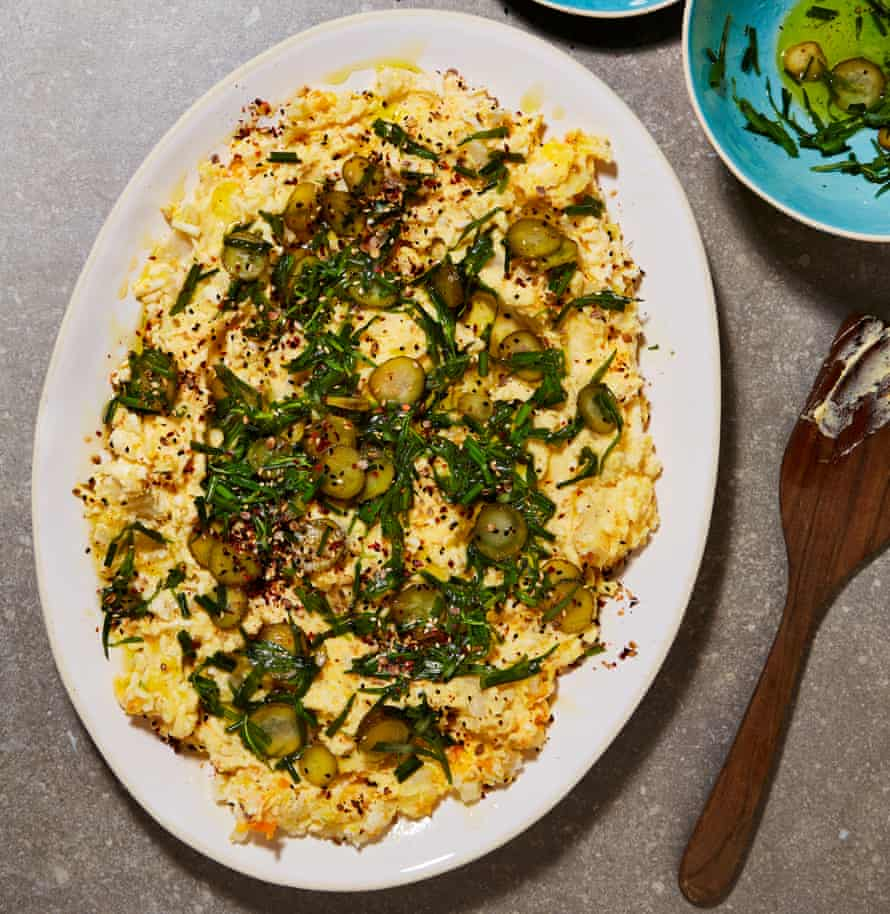

Potato salad

This is a spin on the – very retro – salad olivieh, a mayonnaise-based potato salad with many different variations, depending on whose household you’re in. Some add shredded chicken, peas or mashed carrots, some eliminate the egg. We kept this version veggie, using lots of lemon, herbs and toasted seeds to jazz it up. It’s a real use-up-what-you-have type of dish, suitable to take on picnics or to serve as a barbecue side.
Put the potatoes into a medium saucepan for which you have a lid, and pour over enough water to cover by about 4cm. Season with two teaspoons of salt and bring to a simmer on a medium-high heat. Turn the heat to medium, cover and cook for 25 minutes, or until the potatoes are easily pierced with a fork. Drain and, when cool enough to handle, peel and discard the skins, and roughly crush the flesh in a large bowl to give you a lumpy mash.
Meanwhile, cook the eggs in boiling water for eight minutes, or until just hard-boiled. Drain, peel and discard the shells, then use a box grater to roughly grate the eggs and add them to the potato bowl.
In a medium bowl, whisk the mayonnaise, yoghurt, two and a half tablespoons of lemon juice, two tablespoons of oil, one teaspoon of salt and a generous grind of pepper. Add this to the potato mixture and mix well to combine. Transfer to a large serving plate, spreading it out to create a slight well in the centre. Cover and refrigerate if not serving right away.
Mix the gherkins, herbs, the remaining tablespoon of lemon juice, five tablespoons of oil, one eighth of a teaspoon of salt and a good grind of pepper. Spoon this all over the potato mixture. Mix all the toasted seeds and the chilli, and sprinkle over the top. Serve at room temperature or cold.
If you want to get ahead, make the day before and keep refrigerated, loosening it with a splash of water to serve, if needed.
Make it your own Go traditionally retro and add cooked peas and carrots, or shredded chicken.